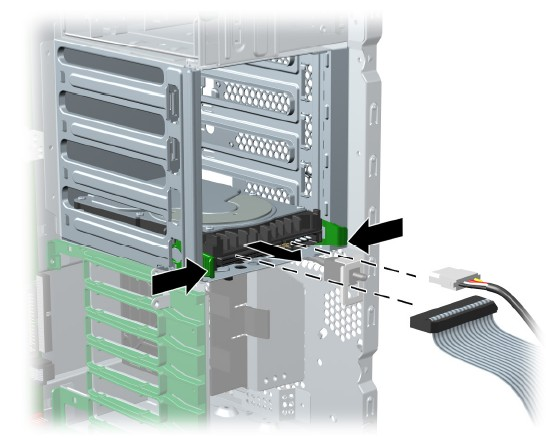
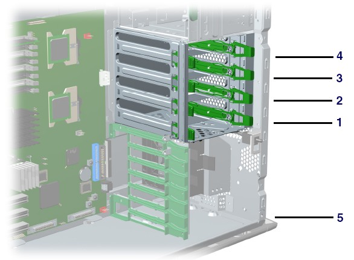
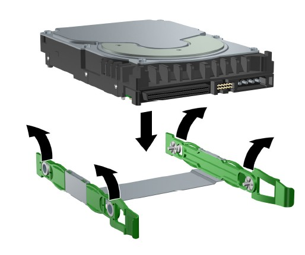
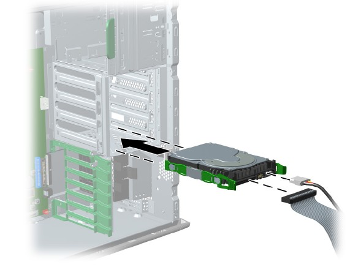
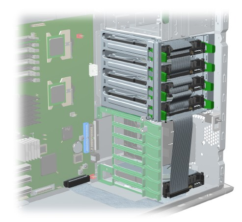
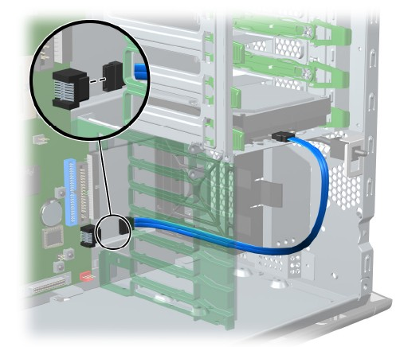

Operating Documentation
Direction 5114045-800, Rev# 10
LightSpeed 4.X Service Information (Advanced)
Operating Documentation |
| Required Persons | Preliminary Reqs | Procedure | Finalization |
|---|---|---|---|
| 1 |
This procedure describes the steps necessary to perform HP xw8200 Hard Drive replacement. For preliminary requirements and finalization steps see HP xw8200 Lower Level FRU Replacement.
| Last Revised: | 17 November 2008 |
| Item | Qty | Effectivity | Part# | Manufacturer | |
|---|---|---|---|---|---|
| 73GB Ultra320 15K RPM SCSI HDD | 3 | - | 5117866-5 | - | |
| System board or component damage could result. | |
| The cooling fan is off only when the workstation is turned off or the power cable has been disconnected. The cooling fan is always on when the workstation is in “On” or “Standby” mode. | |
| You must disconnect the power cord from the power source before opening the workstation. |
| Turn off the workstation before disconnecting any cables. | |
TO PREVENT DAMAGE TO COMPONENTS WITHIN THE HSDA, OBSERVE THE
FOLLOWING ESD PRECAUTIONS:
FOR FURTHER INFORMATION REGARDING ESD PROTECTION, REFER TO THE SAFETY CHAPTER IN THIS PUBLICATION | |
Perform the following steps before servicing the workstation.
Remove/disengage any security devices that prohibit opening the workstation.
Disconnect all peripheral device cables from the workstation.
Remove access panel cover per HP xw8200 Lower Level FRU Replacement.
Disconnect the cables from the back of the suspected faulty hard drive.
Push in on the green drivelock release tabs and slide the hard drive out of the chassis. (See Illustration 1.)
Illustration 1: Hard Drive Removal

NOTE: Set SCSI ID jumpers to the same SCSI ID as that found on the faulty drive. See details below for determining the proper SCSI ID. Before installing a SCSI hard drive on your system, you must give the hard drive a unique SCSI ID. All SCSI controllers require a unique SCSI ID (0–15) for each SCSI device that is installed. To set the SCSI ID on a drive, see the instructions on top/back of the hard drive for the correct jumper settings. The drive probably displays a diagram of the jumper block. This diagram shows you which blocks to cover with your jumper to get the desired ID. For example, if the drive must be set to 3, the drive might show that the 4 ID bits are at the far left of the connector (ID0, ID1, ID2, and ID3), then using the jumpers provided, cover each block to set the SCSI ID. The reserved and available SCSI ID numbers are displayed in the following list:
0 is reserved for the primary hard drive (not reserved for the primary hard drive on Linux). When 0 is used for the primary hard drive, set the second hard drive to 1, the third to 2, and so on.
7 is reserved for the SCSI controller.
1 through 6 and 8 through 15 are available for all other SCSI devices.
After you have given the hard drive a unique SCSI ID, you can install the hard drive into your system. Select a drive bay in which to install the drive.
| NOTE: | If installing more than one hard drive, use the hard drive bay order in Illustration 2. |
Illustration 2: Hard Drive Installation Bay Order

Simultaneously disengage the green tabs of the rail assembly and slide the rails out of the empty bay.
Attach the rails to the hard drive by first inserting the hard drive rail assembly pins into one side of the hard drive screw holes.
| If installing the hard drive into Bay 5, proceed to Step 6. | |
Gently flex open the opposite side of the hard drive rail assembly and insert the remaining pins into the holes in the hard drive.
Illustration 3: Hard Drive Rail Assembly

Push the drive into the selected bay until it snaps into place. Then attach the power and SCSI cable to the drive. (See Illustration 4.)
Illustration 4: Attaching Power and SCSI Cables

If installing a hard drive into Bay 5, do the following:
Lay the workstation on its side and remove the three drive screws that are located near Bay 5.
Insert the drive into Bay 5 and align the holes in the bottom of the hard drive with the screw holes at the base of the chassis.
Insert the screws through the base and tighten the hard drive to the chassis.
Connect the data cable to the SCSI1 connector on the system board ( Illustration 5).
Illustration 5: Data Cable to SCSI1 Connection

Select a drive bay in which to install the drive. Squeeze the green tabs and slide the rails out of the empty bay ( Illustration 1).
Attach the rails to the hard drive by aligning the notches with the holes and squeezing it into place ( Illustration 3).
Push the drive into the selected bay until it snaps into place.
Attach the power cable and data cable to the drive.
Connect the data cable to the serial ATA port ( Illustration 6).
Illustration 6: Data Cable to Serial ATA Port

No finalization required.